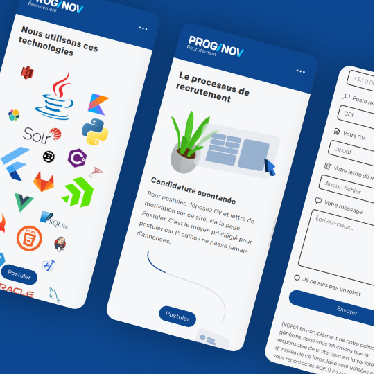
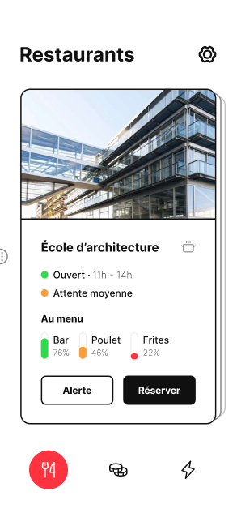
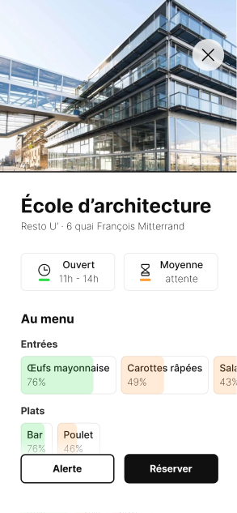
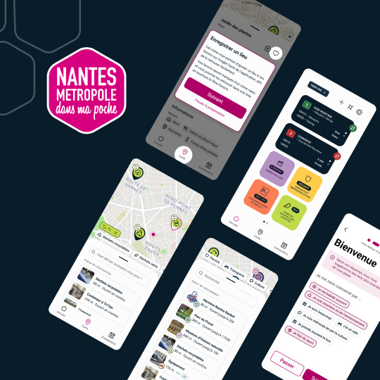
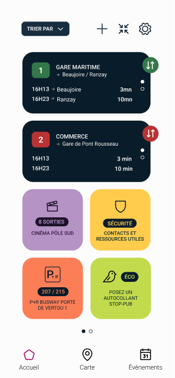
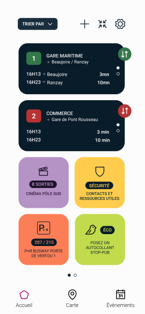

Proginov
Internship · September and October 2022 · 8 weeks
View the website
During this internship, the company asked me to design a recruitment website. I started by creating wireframes and mockups in Figma to prepare the structure of the website. Then, I developed it using HTML, PHP, CSS, and JavaScript, ensuring it was responsive to all screen sizes. I also implemented an application form allowing the company to receive candidates for multiple positions. Finally, I ensured the website was properly tested on different browsers and platforms. Additionally, I worked on some extra projects related to the website, such as graphic and promotional design.
I really enjoyed this internship because it allowed me to use and develop my skills in various fields: UX and UI, obviously, but also graphic design, 3D infographics, and coding. I also significantly improved my programming skills by developing the website.

Crous’tillant
Bachelor Project (school project) · November 2022 to June 2023 · 8 months · Solo
View the mockup on Figma
For my final Bachelor cycle project, I chose to work on French university restaurants and imagine ways to improve their user experience. After dining in these restaurants several times, I noticed that long waiting times could prevent some students from enjoying these meals, and there was significant food waste.
I thought of ways to address these issues through a mobile app and some adjustments in the restaurants. The app I envisioned allows students to get real-time information about their favorite university restaurants, such as menus and food quantities, as well as the estimated waiting time at the entrance, without having to go there and waste valuable minutes of their short lunch break. It also offers a click and collect feature in certain types of restaurants, and community members can suggest dishes they’d like to see in their favorite establishments. All these features aim to make meals easier for students without them having to rush during their short breaks, giving them a bit of control over the menus.
This project was purely focused on user experience and interface design. I started by conducting extensive research in various fields and learned a lot about university restaurants. I also discussed with the team of a university restaurant to understand how they operated and which of my ideas were most feasible. Then, I imagined the app's features, organized them into menus and pages, and finally created the project’s identity and visuals.




Nantes Métropole dans ma Poche
Iterative Project (school project) · November 2022 to February 2023 · 4 months · 4 people
We worked with Nantes Métropole on this project. The city hall asked us to review the city’s app and come up with new ways to interact and navigate within it. We used the Scrum method, which involves precisely organizing the tasks each team member needs to accomplish and completing them in a short period called a “sprint” before presenting the results to the partners and incorporating their feedback to continue.
We created interactive prototypes with Figma to showcase the app's envisioned features, and we used Notion to assign tasks and plan everything.
Scrum is a way to quickly conceive and implement new ideas for a service. We documented our design concepts for the app and decided which ones were the best to prioritize tasks and prototype these concepts in several hours of work.
This project allowed me to explore new methods of organization and ideation, as well as to work within a larger team in collaboration with a company. The managers of Nantes Métropole in My Pocket were interested in our proposals for this app designed to improve and facilitate the lives of Nantes residents, and they always provided feedback to improve our ideas.

Project made with Jeanne Bramkamp, Emma Guiglion and Lise Pettine.
Popbusters
Concept Store Design Project
Short project (school project) · March 2022 · 4 weeks · 2 people
View the prototype on Figma
For this project, we had to design a concept store and its website in pairs. Since we both love cinema, we decided to create a concept store linked to this art form. We then had to choose the brand’s visual identity: its logo, colors, and typography. Our inspiration came from cinema-related elements such as popcorn, films, and the red color associated with theater seats. Finally, we created the wireframes and prototype of the website.
The result is a virtual concept store for blockbuster fans, where they can rent original and iconic pieces from cult films. The logo was created using Illustrator, the 3D images were made with Blender, and the prototypes were designed in Figma.
During this project, I was able to express my creativity and explore themes I enjoy, while also working with 3D software. From modeling and texture creation to animation, I significantly improved my 3D skills through Popbusters. I also extensively used Figma’s prototyping features to design user-friendly animations.

Project made with Augustin de Soras.
Video Creation with After Effects
After Effects (school project) · April 2022 · 4 weeks · Solo project
I later had the opportunity to create a 30-second motion design video showcasing this fictional brand and all its visuals, working again with Blender and After Effects. Since I enjoy creating visual elements, animating, and editing videos, this introductory After Effects course allowed me to use some of the assets I had already created and further expand the Popbusters universe.
3D Video Creation
Workshop Animate Your Interface (school project) · June 2023 · 3 days · 3 people
A year later, I had to create a video combining real footage and special effects in three days. With my group, we decided to build upon Popbusters and made a short fictional advertisement using video compositing and 3D animated elements. This allowed me to enhance my video skills and handle the sound design, from effects to music, for this short spot, as I’m very interested in sound engineering and music creation.
Project made with Augustin de Soras and Élisa Desvaux.
Interactive Workshops
Esprits Émotifs
Creative Coding Workshop (school project) · January 2022 · 4 days · 3 people
In groups of three, we had to create a generative and interactive installation using Processing, a programming language. We explored interactive solutions and imagined a poetic universe. Our code-generated graphics were projected onto a wall, and a webcam recognized masks made for the installation. Users could pick up a mask from a table and show it to the camera. A unique graphic and musical universe was triggered depending on the mask, with each universe representing a different emotion.
This playful project involved UX, graphic design, machine learning, and programming. It was very educational. I also had the opportunity to compose the installation’s music, making this intense week of work even more enjoyable.
Project made with Augustin de Soras and Jade Roche.
Marmota
Arcade & Craft & Alternative Controller Workshop (school project) · January 2023 · 4 days · 5 people
In the arcade workshop, we had to create an interactive game without a screen in groups of five. We were tasked with using an unconventional controller, Arduino devices, and building the game using available materials (wood, cardboard, etc.). We designed a game where players feed a marmot by grabbing fake food at the start of the path with a hand-shaped spatula and guiding it to the end as quickly as possible, avoiding obstacles and preventing the food from falling. We used light sensors, servo motors, and lots of wiring and code to build the entire game. It’s fun to play and fosters competition between players, encouraging them to beat the high score, reminiscent of old arcade games.
This workshop was an opportunity to work as a team, brainstorm creative ideas for the game’s design, and improve my programming skills.
Project made with Élisa Desvaux, Nina Doris, Baudouin Lainé and Jade Roche.
Tako
Network Workshop (school project) · May 2023 · 4 days · 6 people
The Network workshop involved creating a massively multiplayer game in four days, in groups of six. The game was to run on a main screen visible to all players, with their smartphones acting as individual controllers. We designed a game where two teams compete in a tug-of-war contest. Players scan a QR code on the main screen to join a team, turning their phone into a controller to pull the rope with their team and recruit more players to tilt the balance in their favor.
During this project, I enjoyed programming the node server and the web page players could access, while learning new terminal commands and deepening my back-end programming knowledge. I also used my sound design skills to create a musical atmosphere and sound effects for the game.
Project made with Élisa Desvaux, Aloïs Jeannin, Baudouin Lainé, Lise Pettine and Jade Roche.

 
